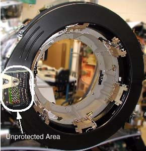
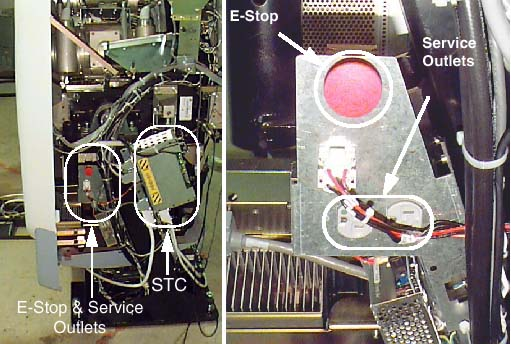
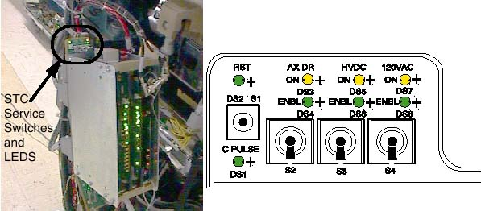
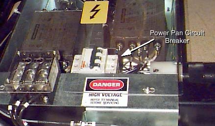
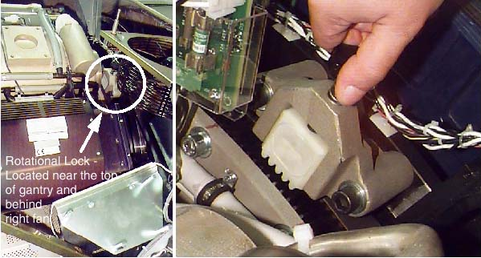

Operating Documentation
Direction 5114045-800, Rev# 10
LightSpeed 4.X Service Information (Advanced)
Operating Documentation |
| Last Revised: | 10 June 2008 |
With the gantry’s primary covers removed, secondary covers are used to help prevent accidental contact with electrical contacts. The most electrically dangerous area in the CT gantry is the exposed slip ring platter. The system should be tagged and locked out whenever the gantry covers are removed.
When the gantry is rotating, the left and right sides of the gantry are where objects are most likely to be ejected, if not properly fastened. IT IS IMPORTANT THAT ALL HARDWARE BE PROPERLY FASTENED (TORQUED) TO ITS PROPER SPECIFICATION.
Take the following precautions when working on, near or around the gantry:
Never wear loose clothing or jewelry. Clothing might become entangled in the rotating assembly and jewelry can short to high voltages.
Avoid standing near the rotating assembly when it is operational, to avoid being struck by the assembly or ejected objects. Always torque fasteners to their proper specification.
Avoid standing or kneeling near the slip ring platter. High voltages exist on the exposed rings. Always disable power to the rings by using the service switches before performing service.
Never put any part of your body into the gantry, unless the gantry is locked. Axial drive power must be disabled. If working on the tilt assembly, the tilt locking bracket should be installed, except when replacing the Hydraulic Tilt Assembly (instructions for inhibiting movement of the gantry for the Hydraulic Tilt Assembly are located in that replacement procedure).
Wear and use personal protection equipment.
Tag and lockout power at the main disconnect.
Apply Ergonomic principles when necessary. Understand your physical limitations and get help when necessary.
Always use and follow procedures described in your service documentation, when servicing this equipment.
All un-insulated electrical contacts, including the slipring, have secondary covers in place to protect service personnel from accidental contact. Removal of any secondary cover exposes service personnel to potentially deadly voltages (see Illustration 1).
All secondary covers must be in place before primary covers are installed and during routine service.
Illustration 1: CT Gantry Slip Ring Platter Covers

Un-insulated high voltage areas in the brush-block area include:
High voltage DC for X-ray generation. Only measurement equipment isolated from ground can be used to measure HVDC on this system. Use of grounded measurement equipment can result in serious personal injury and/or equipment damage.
120VAC for power supplies.
If a secondary cover can be removed and it potentially exposes a service person to an uninsulated electrical hazard, a warning label is applied to or near the secondary cover. In the CT gantry, voltage hazards in excess of 120VAC have been labeled. However, the 120VAC present in the gantry also is capable of causing electrocution. See Illustration 2 for the types of labels used in the CT gantry.
Illustration 2: Gantry Electrical Hazard Labels

LAMPS & LEDS
There are a number of lamps/LEDs on the STC chassis backplane (see Illustration 4) that indicate the functional state of the CT gantry. See Table 1, for a functional description.
Table 1: STC Lamp Descriptions
| LED # | COLOR | LABEL | DESCRIPTION |
|---|---|---|---|
| DS1 | Green | C Pulse | C Pulse indicator from Axial Encoder. |
| DS2 | Green | RST | Indicates status of the HVDC & gantry drives circuit in PDU. On steady = HVDC & Drives Enabled. Slow Flash = E-Stop activated. HVDC & Drives Disabled. Fast Flash = Table Tape Switch activated. Cradle, Tilt & Elevation Disabled. |
| DS3 | Yellow | AX DR ON | Indicates the Axial Drive Contactor in the PDU is energized. |
| DS4 | Green | ENBL | Indicates the Axial Drive Contactor in the PDU is enabled. |
| DS5 | Yellow | HVDC ON | Indicates the HVDC Contactor in the PDU is energized. |
| DS6 | Green | ENBL | Indicates the HVDC Contactor in the PDU is enabled. |
| DS7 | Yellow | 120VAC ON | Indicates the Gantry 120Vac Contactor in the PDU is energized. |
| DS8 | Green | ENBL | Indicates the Gantry 120Vac Contactor in the PDU is enabled. |
The descriptions in the above table apply when the associated LED is lit.
A number of features have been provided as means of disabling hazards at particular points in the gantry, for ease of service. This and the next few sections will describe these features.
The E-Stop and Service outlets are located on both sides of the CT gantry on the stationary frame. The E-Stop is identified as a large red push button. The Service outlets are standard duplex 120VAC outlets. These are provided for ease of using AC powered test equipment near the gantry without requiring extension cords.
Illustration 3: CT Gantry E-Stop and Service Outlets (Right Side of Gantry)

The Service switches in the CT Gantry are located at the top of the STC backplane (see Illustration 4). UP (enabled) is the normal operational position for these switches.
The service switches and circuit breakers described hereafter are not to be relied on as personal protection devices. They do not replace tag and lockout of main power to ensure personal safety. Switches and breakers are intended to only inhibit particular system functions and equipment operation. They do not eliminate or remove the electrical or mechanical hazards that exist. Because hardware can fail and defeat the functionality of these devices, only Lockout/Tagout ensures protection from unattended gantry rotation and electrocution. Be aware that not all power is removed on the gantry by use of these switches.
Illustration 4: Location of STC Service Switches and LEDs (Switches shown in OFF position)

Table 2: STC Service Switch Descriptions
| LABEL | DESCRIPTION |
|---|---|
| S1 | Momentary Push button - Resets gantry drives enable circuit in PDU. |
| S2 | Switch enables or disables the Axial Drive function - Default position up (enable) |
| S3 | Switch enables or disables the HVDC function. Default position up (enable) |
| S4 | Switch enables or disables Gantry 120VAC function - Default position up (enable).With S4 OFF, 120VAC to the gantry and table service outlets is controlled by CB3 in the PDU only. |
The circuit breaker in the power pan, located at the rear of the CT Gantry base, protects both the 170VDC and tilt drives (table and gantry respectively).
Illustration 5: Power Pan Circuit Breaker

The CT Gantry’s internal E-Stop performs the same function as the E-Stops mounted to the console and the gantry covers. See Illustration 3.
Inside the CT Gantry are several hazards that can cause personal injury from:
Moving assemblies (rotational and tilt)
Assembly weights (tube and covers)
Chemicals (slip ring brush dust and oils {Tube, HV Tank and Tilt Drive Hydraulic Oil})
Heat sources (tube)
To prevent assembly and part separations from the rotating assembly, all fasteners must be torqued to their proper specification, using a calibrated torque wrench. The torque specification for a fastener is specified in its associated replacement procedure. For further information on torque, including a conversion factor chart, refer to Torque Wrench Information.
To prevent un-commanded motion of the CT rotating assembly, the rotational locking pin must be engaged anytime the rotating assembly is serviced.
Illustration 6: CT Gantry Rotational Lock Assembly

The rotational lock is located on the rear side of the CT Gantry, near the top. It is positioned directly across from the teeth in the rotational assembly. To operate the lock:
Turn the handle clockwise until the teeth on the lock fully engage the teeth on the rotating assembly. If necessary, rock the rotating assembly slightly to align the teeth. Hand tighten until snug. Do not over-tighten. Visually verify that the teeth are engaged.
Turn the handle counter-clockwise until the teeth on the lock and the rotating assembly are fully disengaged and the teeth clear each other sufficiently.
Illustration 7: Rotational Lock Assembly Operation

| Do not use this procedure when replacing or servicing the Gantry Tilt Hydraulic Cylinders. The appropriate method for safely inhibiting gantry movement for that procedure is defined directly within the steps of the replacement procedure. |
| NOTE: | Spatial orientation defined in this section for is from the service perspective of an observer standing at the end of the patient table looking towards the Gantry Display board, through the gantry. This orientation defines a negative or minus gantry position which places the top of the gantry leaning away from the observer. Refer to System Safety Overview procedure section titled "Spatial Orientation While Servicing The System". |
Position the gantry at zero degrees. Start on one side.
While holding the bracket in place (see Illustration 8), secure the bracket to the stationary frame at locations 1 and 2. [Note: The two tilt brackets are identical.]
Next, secure the bracket to the pivoting frame at location 3.
Repeat these steps on the other side.
Illustration 8: Tilt Locking Bracket (Right and Left Sides)

When the brackets and associated hardware are not in use, store them in the top compartment of the PDU.
Whenever the x-ray tube is removed or installed, a tube hoist must be used. With the help of the tube hoist, one (1) person can change an x-ray tube.
| Potential for injury to service personnel. | |
| Service task requires personal evaluation. | |
| Proceed with an evaluation of how best to approach this service task. Apply ergonomics principles where necessary. Understand your physical limits with regards to the task and seek additional help if required. |
The front and rear covers are designed to be safely removed by one (1) person, using the cover dollies supplied with your system. Because the weight of these covers could cause injury, these cover dollies must always be used. Both the installation manual and enclosure replacement procedures describe how to assemble and use cover dollies.